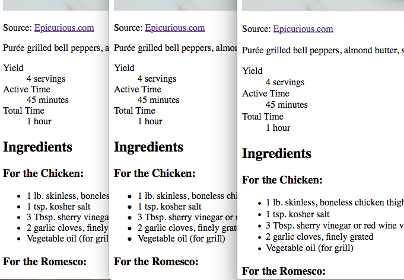
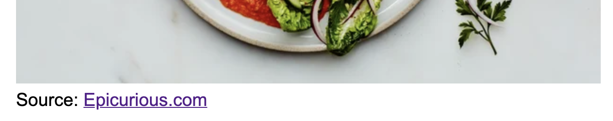
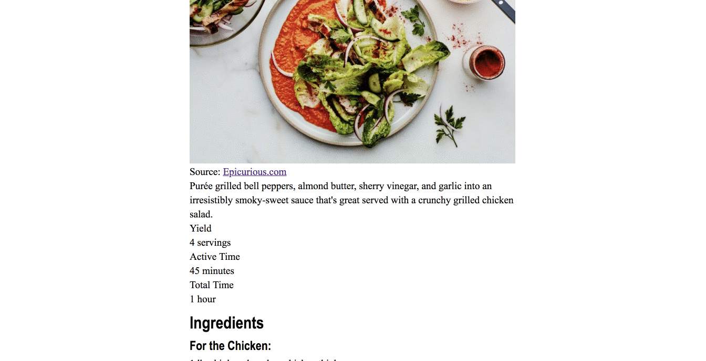
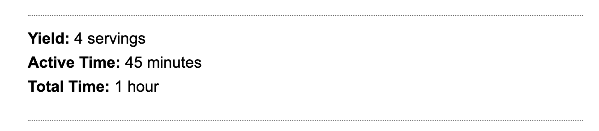

9 CSS class
This lesson has a companion video that walk through it. Find it in Canvas under Panopto Video. It’s called CSS in-class lesson.
CSS is the skin and DNA attributes that make one HTML skeleton look different from another. We use CSS to set fonts, colors, positioning and more. In this lesson, we’ll take the HTML skeleton we made in our previous lesson, and make it pretty.
9.1 Goals
- To understand default browser styling and how to handle it.
- To use CSS styles to give visual appeal to page, applying the principles we learned in the Codecademy lessons.
This will be our finished product:

Here is a PNG of the in-class project, which might be easier to study.
{kind=link}
9.2 Resources
You have the internet at your disposal for help. Here are some resources you might find useful.
- You can review steps in the Codecademy Learn CSS course.
- You can look up specific resources in the W3 Schools HTML documentation. Shay Howe has a pretty good tutorial. Mozilla also has good CSS docs.
- Google it. Use good search techniques: Include the term “css” and your goal or css property.
9.3 CSS Reset
Go into your repo (yourname-html-css) from the previous HTML class lesson and open in your browser the recipe.html file. Your browser will display it just fine, with some default sizing. The problem is, different browsers display defaults just a little bit differently. Here is this page in Chrome, Safari and Firefox. Notice the spacing and bullet sizes are a wee bit different between the versions.

There is way to deal with this called CSS reset. The concept is to zero out all margins, paddings and text sizes so you have a zero base to work from before applying new styles. The version that we will use is from HTML5Doctor, and you can read about it here.
So, let’s do it:
- In your yourname-html-css folder, create a new blank file called
reset.css– you might use thetouchcommand to do this, or File > New File in VS Code – and then populate it with the contents of the HTML5resetCSS file. - We need to add a link in our HTML stylesheet to the reset CSS stylesheet. Put this before the closing
</head>tag.
<link rel="stylesheet" type="text/css" href="reset.css">The link tag basically connects these files together. I’ll be honest … I never remember how to write it … I just look it up when I need it.
Refresh your recipe.html browser page and watch your something-kinda-special turn into muck.
9.4 Relative font sizing
If you’ve worked with any HTML font sizing in the past, you might be familiar with setting the size of things in pixels, or px. When you do that it makes is more difficult to adjust elements in relation to others on the page, especially in responsive design, which we are learning. (Responsive design is making web pages that work equally well on phones, tablet and desktops.)
We’ll use a method to manage sizes by setting a base size for fonts, and then making everything else relative to that size. There is more to it that that, but know our next move is to take the default text size (16px) and set it to 10px, so that we can set every other font size relative to 10. (We do this by resetting the default font size to 62.5% of the original 16.) This allows us to then use a relative measure called a rem that are factors of ten, where 2.4rem is the equivalent of 24px for a normally-sized browser.
9.5 Create a site style file, set body defaults
- Create a new file and call it
styles.css. - Now, in your
recipe.htmlfile, add a different<link>tag referring to that css file after thereset.csslink. - Now we’ll add some defaults for the
<body>tag in thestyles.cssfile. Add this to the top, then save both the css and html files.
body {
font-family: 'Times New Roman', Times, serif;
font-size: 62.5%;
}If you refresh your page in your browser, you’ll see things get worse … everything is super small now. Don’t worry, we’ll fix it.
9.6 Set article styles
Let’s set some boundaries for the article. If you look at the finished example above, the content is a certain width and centered in the page. We’re going to add and define an <article> tag to include everything we have in the body currently. We’ll add a footer later.
9.6.1 Add the article tag
- In
recipe.html, add a beginning<article>on a new line after the beginning<body>tag. - Add the closing
</article>tag before the closing</body>tag near the bottom. - Save your html file.
In doing this, we have defined the body of our web page to be an “article”, which a recipe kinda is in the context of a website about recipes.
9.6.2 Add the article styles
- Now, in
styles.css, add the following styles:
I encourage you to type as much of the code as you can so you understand how the code editor can help you write in the styles.
article {
max-width: 620px;
margin-right: auto;
margin-bottom: 30px;
margin-left: auto;
}This margin-<direction>: auto; style was discussed in the Learn CSS lesson in Codecademy.
If you’ve done this right, you should be able to refresh your browser and see everything centered.
9.7 Set text sizes
Let’s fix up the text sizes. We’re going to set a base size for all basic text elements, and then change them later in the places where we need them. Add this to your styles file:
p, ul, ol, dl {
font-size: 1.2rem;
line-height: 1.7rem;
margin-bottom: 12px;
}What this has done is set all text-type elements at what is the equivalent to 12px, but we’ve use the rem measurement to set it relative to the base size, which was essentially 10px.
We’ve set a line-height so lines of type don’t sit on top of each other and we’ve also given all of those elements a bottom margin so the elements have some space between them.
In the definition above, it’s important that we have commas between each HTML element. If we don’t have those, the browser will think we need all of them together (and) instead of any of them (or). We are setting these rules for p or ul or ol, etc. Not all of them used together.
9.8 Set headline sizes
Now we’ll set headlines font and sizes. Add this to your styles.css file, save and refresh your browser:
h1, h2, h3, h4, h5, h6 {
font-family: 'Franklin Gothic Medium', 'Arial Narrow', Arial, sans-serif;
}
h1 {
font-size: 2.75rem;
margin: 20px 0;
}
h2 {
font-size: 2rem;
margin: 16px 0;
}
h3 {
font-size: 1.5rem;
margin: 14px 0 8px 0;
}The first rule sets the font to a series of sans serif fonts, and we’ve done it for all headline sizes.
The other rule set sizes and margins for various sizes of headlines. You’ll notice that the margins are set in a single line. You can review the rules regarding that here.
9.9 Set the credit
Our next challenge is to set the credit. Because the credit is in a <p> tag, we need to add a class attribute to it so we can target it specifically with CSS. We’ll use a “class” because credits may not unique on a web page, and this way we could set them for all the credits on our site.
Here is what we’re going for:

- In the html page, add the
class="credit"attribute to the<p>tag around the credit “Source: Epicurious.com” so it looks like this:
<p class="credit">Always use lowercase characters in class names and use dashes if they are more than one word. This makes them readable and is considered convention in writing CSS. Having a common convention for things like this help people collaborate on code as it is predictable and readable. Name your classes for what the element is, not what you want it to look like. If you name your class for captions “red” and then decide later to make them blue, that would be confusing.
- Now that we’ve defined it, we can add the following styles to your style sheet to target that class:
.credit {
margin-top: 2px;
margin-bottom: 20px;
font-family: Arial, Helvetica, sans-serif;
}We’ve change the font from the default to Arial (with backups) and then set the top and bottom margins.
9.9.1 Let’s talk about tricks of the trade
Sometimes I have trouble knowing if my CSS property is affecting the thing I want, so sometimes I’ll set some crazy CSS rule like color-background: red; to make sure I’m targeting what I want.
The other thing I might do is use the browser Inspector to test styles right on the screen. Once I figure out my style, I can then add it to my styles file.
It’s easier to show this than to write it out, but you:
- Use control-click on the element to get the contextual menu and choose Inspector.
- Make sure you are on the correct element in the Element tab on the left pane of the Inspector.
- Add/modify rules rules in the Styles tab on the right pane of the Inspector.
Here is an example in a screencast:

9.10 Set description style
We want the recipe description to be a bit bigger than the other type. First we need to give it an “id”, then give the id a style.
- In the html file, add an
<id>attribute called “description” to the<p>tag around the “Purée grilled bell peppers” paragraph. We use<id>because there is always only one per recipe (it will not repeat), and we need to target it specifically. - In the CSS file, add the following style:
#description {
font-size: 1.5rem;
margin-bottom: 20px;
}9.10.1 Styling elements vs ids vs classes
At this point, you might be confused why sometimes we have a period before a style .credit and sometimes a hash #description and sometimes nothing p, ul, li. Let’s define the difference and hopefully it will become clear.
- HTML elements are the most generic thing you can style. A
<p>tag or<h1>, etc. If you write a style for one, it affects ALL of those elements on your site. The style for a<p>tag is:p {selector: rule;} - But sometimes you have common elements that you re-use often, like photo credit. You always want those to look a certain way on your site, but you want them to look differently than you body text. So, you “classify” that element with a class attribute:
class="photo-credit". Now that it is classified, we can write one style that will affect all the bylines. What you call the class is up to you, but best practice is to choose a name that describes it is. When we write a style for one of these classes we indicate that by preceding the class name with a period:.photo-credit {font-family: Arial;}. - There are also cases on a page where an element is used only one way. In this case we might “identify” that element with an id attribute:
id="unique-whatever". An example might be the main headline of a story; there is always only one. When we use anidwe are indicating to the browser (and our fellow coders, and even Google) that this element only appears once on this page. When we write a style for an id, we precede the name with a hash to indicate the style is for an id:#unique-whatever {font-family: Times;}.
9.11 Set the Yield box style
Here’s our goal:

Let’s set up the fancy lines above and below the yield values first.
- In your html file, you should have a
<div>surrounding the whole<dl>section, with anid="yield". - In the css file, add the following:
#yield {
border-bottom: 1px grey dotted;
border-top: 1px grey dotted;
}Save and refresh to see the lines. We used a shorthand for the border property that allows us to set the size, color and style in one rule.
9.12 Set the yield text
Another story about tricks of the trade. When I was preparing this lecture, I had trouble getting the <dt> and <dd> values to show on the same line. So, what do you think I did? I googled it, of course, using the phrase “make css dd dt on same line”. I got my answer here. It wasn’t the first answer of my Google search … I had to poke around on different search results until I found one that worked for me.
- Add the following styles to your style sheet.
dl {
font-family: 'Franklin Gothic', Arial, sans-serif;
font-size: 1.1rem;
padding: 12px 0;
}
dt {
float: left;
margin-right: 5px;
font-weight: bold;
}The first <dl> rule sets the font and size of the text. The next <dt> rule floats that part of the description to the left, sets a margin and makes it bold.
- To finish out, go into the html file and add the colon after text inside the
<dt>tags, like “Yield:”.
Could we have done this with paragraphs or divs? Absolutely. But then you wouldn’t have learned about description lists ;-).
9.13 Unordered list margins
The default unordered list looks crappy. Let’s move the bullets so they line up with the other text in the article. We do this with list-position.
Here is our goal:

- Add to your css file:
ul {
list-style-position: inside;
list-style-type: square;
}We did two things here: The position rule moves the list so it starts with the text instead of being indented. The list-style-type changed the bullet from a circle to a square. There are other list-style-types as well, and you can even use an image, though we won’t get into that here.
9.14 Set the ordered list style
We need to do the same here for ordered lists.
ol {
list-style-position: inside;
}It works the same way the unordered list did.
9.15 Set the nutrition styles
This is our last challenging piece and we get to learn some more advanced CSS fu. This is our goal:

But we have lists, which are a vertical structure. We could separate these into to sections and float them, but if they were generated from an application or CMS of some kind, we might not know when to separate the left section from the right.
What we’ll do instead is use special CSS selector called nth-child to adjust every other list item.
Let’s do this in incremental steps so you can see the magic happen.
- Set the dotted border on the li tags with this:
#nutrition li {
list-style-type: none;
border-bottom: grey dotted 1px;
background-color: red;
}Since we only want to change the list items that are within the nutrition div, we used both the #nutrition id and the li element selectors.
For the first rule we choose a “none” list style to remove the bullets, then on the next style we added the grey dotted line. Lastly, we added a red background color so you can see the outline of each li tag on the page. We’ll take this rule out later. Save and refresh to see your lines.
- Next, in the same rule, let’s float all of the list items the left, so add this as a new line in that #nutrition li rule:
float: left;Save and refresh, and then you’ll see all of the list items try to fit on the same space. Well, what we really want is for each line to take up half of the space.
- Add another value to the same rule. We’re using a little less than 50% to give us some wiggle room with margins later:
width: 48%Save and refresh. Bamm … we have two on each line. Now we need some space between them. If we add a margin-right call to all the li’s, then it would put a margin far to the right as well. This is where the nth-child comes in. We can add a rule to every ODD numbered list item:
#nutrition li:nth-child(odd) {
clear: both;
margin-right: 10px;
}OK, we are looking pretty good, but this would look tons better if we could make the grams value flush right in every line. We can do this by putting the two parts of the list items into spans. This is kind of our alternative to the description list that we used for yield.
So, to do this we have to rewrite all the list items to have spans, and then to class those spans so we can target them with css. In order to save time, just copy/paste to replace them.
- In the html file, replace all the li’s under “Nutrition Information” with this (make sure to nest it inside the ul tag, which should still be there):
<li>
<span class="nutri-item">Calories</span>
<span class="nutri-value">541</span>
</li>
<li>
<span class="nutri-item">Carbohydrates</span>
<span class="nutri-value">13g (4%)</span>
</li>
<li>
<span class="nutri-item">Fat</span>
<span class="nutri-value">44g (68%)</span>
</li>
<li>
<span class="nutri-item">Protein</span>
<span class="nutri-value">23g (46%)</span>
</li>
<li>
<span class="nutri-item">Saturated Fat</span>
<span class="nutri-value">8g (38%)</span>
</li>
<li>
<span class="nutri-item">Sodium</span>
<span class="nutri-value">902mg (38%)</span>
</li>
<li>
<span class="nutri-item">Polyunsaturated Fat</span>
<span class="nutri-value">8g</span>
</li>
<li>
<span class="nutri-item">Fiber</span>
<span class="nutri-value">4g (18%)</span>
</li>
<li>
<span class="nutri-item">Monounsaturated Fat</span>
<span class="nutri-value">25g</span>
</li>
<li>
<span class="nutri-item">Cholesterol</span>
<span class="nutri-value">111mg (37%)</span>
</li>- Next, add the CSS to make the
nutri-valuespans move to the right:
#nutrition .nutri-value {
float: right;
}- Once everything is good, you can comment out the red background color, if you haven’t already.
9.17 Save and push to Github
Use the git cycle to push all your code to Github.
9.18 Turn in the assignment
Turn in this Github URL to the Canvas assignment for CSS in-class.